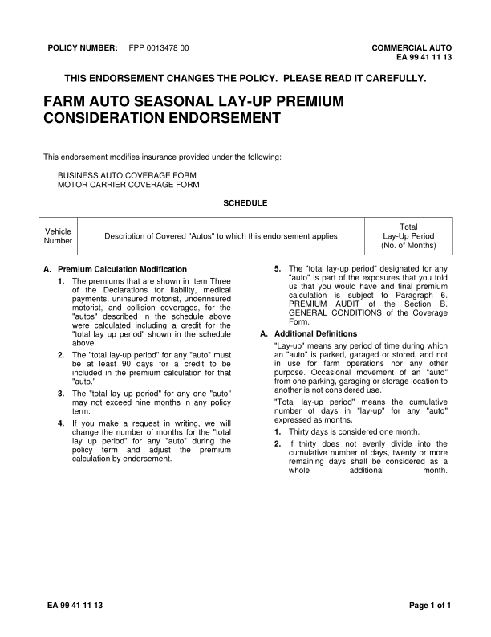
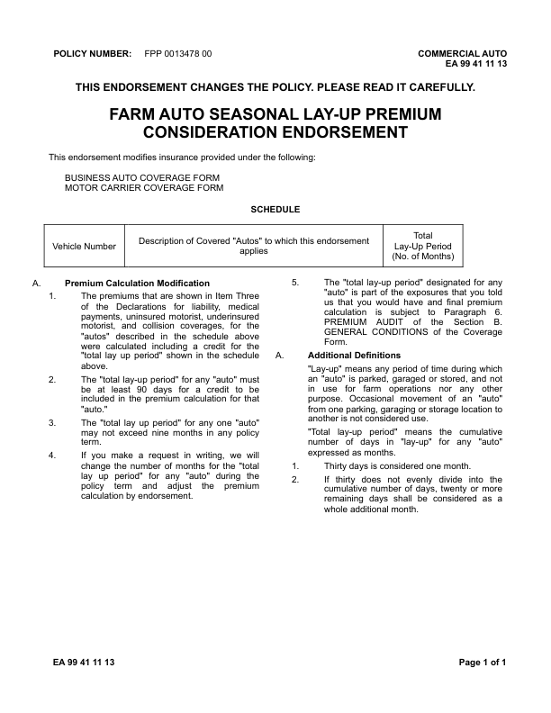
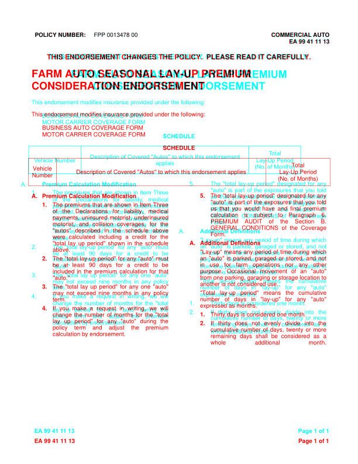

GhostDraft (TST) — page 2

HTML designer — page 2
no page
Overlay
page count differs
EA9941_1113: MATCH score 100.0% pages golden 1 html 1 (pages with text) words golden 349 html 349 missing 0 extra 0 golden C:\src\fact-docgen\src\Moe.Commercial.Documents.Generation.Integration.Tests\TestData\Snapshots\EA9941_1113\GoldenSnapshot.txt template C:\src\fact-poc\output\ghostdraft\batch\EA9941-1113.json serverxml C:\src\fact-poc\output\ghostdraft\serverxml\EA9941_1113\ServerXml.xml



moved THIS (+3.5, -0.3)pt moved ENDORSEMENT (+3.5, -0.3)pt moved CHANGES (+3.5, -0.3)pt moved THE (+3.5, -0.3)pt moved POLICY. (+3.5, -0.3)pt moved FARM (+67.1, +0.5)pt moved AUTO (+65.5, +0.5)pt moved SEASONAL (+65.2, +0.5)pt moved LAY-UP (+64.8, +0.5)pt moved PREMIUM (+61.9, +0.5)pt moved CONSIDERATION (+104.7, +0.0)pt moved ENDORSEMENT (+103.3, +0.0)pt moved This (+0.0, -20.9)pt moved endorsement (-0.0, -20.9)pt moved modifies (-0.0, -20.9)pt moved insurance (-0.0, -20.9)pt moved provided (-0.0, -20.9)pt moved under (-0.0, -20.9)pt moved the (-0.0, -20.9)pt moved following: (-0.0, -20.9)pt moved BUSINESS (+0.0, -20.7)pt moved AUTO (-0.6, -20.7)pt moved COVERAGE (-0.8, -20.7)pt moved FORM (-0.8, -20.7)pt moved MOTOR (+0.0, -20.9)pt moved CARRIER (-0.2, -20.9)pt moved COVERAGE (-0.2, -20.9)pt moved FORM (-0.2, -20.9)pt moved SCHEDULE (+0.1, -20.7)pt moved Total (-38.9, -21.0)pt moved Description (+23.8, -26.5)pt moved of (+23.8, -26.5)pt moved Covered (+23.8, -26.5)pt moved "Autos" (+23.8, -26.5)pt moved to (+23.8, -26.5)pt moved which (+23.8, -26.5)pt moved this (+23.8, -26.5)pt moved endorsement (+23.8, -26.5)pt moved Lay-Up (-39.5, -20.5)pt moved Period (-39.5, -20.5)pt moved (No. (-39.5, -20.8)pt moved of (-39.5, -20.8)pt moved Months) (-39.5, -20.8)pt moved A. (-18.0, -20.5)pt moved Premium (+0.0, -20.5)pt moved Calculation (-0.0, -20.5)pt moved Modification (-0.0, -20.5)pt moved 5. (-18.0, -20.4)pt moved The (+0.0, -20.4)pt moved "total (+0.1, -20.4)pt moved lay-up (+0.1, -20.4)pt moved period" (+0.0, -20.4)pt moved designated (+0.0, -20.4)pt moved for (+0.1, -20.4)pt moved any (+0.1, -20.4)pt moved "auto" (+0.0, -20.9)pt moved is (+0.1, -20.9)pt moved part (+0.0, -20.9)pt moved of (+0.0, -20.9)pt moved the (+0.1, -20.9)pt moved exposures (+0.0, -20.9)pt moved that (+0.1, -20.9)pt moved you (+0.0, -20.9)pt moved told (+0.1, -20.9)pt moved 1. (-18.0, -20.9)pt moved The (+0.0, -20.9)pt moved premiums (+0.1, -20.9)pt moved that (+0.1, -20.9)pt moved are (+0.1, -20.9)pt moved shown (+0.2, -20.9)pt moved in (+0.2, -20.9)pt moved Item (+0.2, -20.9)pt moved Three (+0.1, -20.9)pt moved us (+0.0, -20.7)pt moved that (+0.1, -20.7)pt moved you (+0.0, -20.7)pt moved would (+0.1, -20.7)pt moved have (+0.1, -20.7)pt moved and (+0.1, -20.7)pt moved final (+0.1, -20.7)pt moved premium (+0.0, -20.7)pt moved of (+0.0, -20.7)pt moved the (+0.2, -20.7)pt moved Declarations (+0.4, -20.7)pt moved for (+0.5, -20.7)pt moved liability, (+0.6, -20.7)pt moved medical (+0.0, -20.7)pt moved calculation (+0.0, -20.4)pt moved is (+0.0, -20.4)pt moved subject (+0.1, -20.4)pt moved to (+0.0, -20.4)pt moved Paragraph (+0.1, -20.4)pt moved 6. (+0.1, -20.4)pt moved payments, (+0.0, -20.4)pt moved uninsured (+0.1, -20.4)pt moved motorist, (+0.0, -20.4)pt moved underinsured (+0.0, -20.4)pt moved PREMIUM (+0.0, -20.9)pt moved AUDIT (-0.3, -20.9)pt moved of (-0.4, -20.9)pt moved the (-0.3, -20.9)pt moved Section (-0.1, -20.9)pt moved B. (+0.0, -20.9)pt moved motorist, (+0.0, -20.9)pt moved and (+0.0, -20.9)pt moved collision (+0.1, -20.9)pt moved coverages, (+0.0, -20.9)pt moved for (+0.0, -20.9)pt moved the (+0.1, -20.9)pt moved GENERAL (+0.0, -20.7)pt moved CONDITIONS (-0.2, -20.7)pt moved of (-0.1, -20.7)pt moved the (-0.0, -20.7)pt moved Coverage (+0.1, -20.7)pt moved "autos" (+0.0, -20.7)pt moved described (+0.1, -20.7)pt moved in (+0.1, -20.7)pt moved the (+0.1, -20.7)pt moved schedule (+0.0, -20.7)pt moved above (+0.1, -20.7)pt moved Form. (+0.0, -20.4)pt moved were (+0.0, -20.4)pt moved calculated (+0.0, -20.4)pt moved including (+0.1, -20.4)pt moved a (+0.1, -20.4)pt moved credit (+0.1, -20.4)pt moved for (+0.1, -20.4)pt moved the (+0.1, -20.4)pt moved "total (+0.0, -20.9)pt moved lay (+0.1, -20.9)pt moved up (+0.0, -20.9)pt moved period" (+0.1, -20.9)pt moved shown (+0.1, -20.9)pt moved in (+0.0, -20.9)pt moved the (+0.0, -20.9)pt moved schedule (+0.1, -20.9)pt moved A. (-18.0, -20.4)pt moved Additional (+0.0, -20.4)pt moved Definitions (-0.0, -20.4)pt moved above. (+0.0, -20.7)pt moved "Lay-up" (+0.0, -20.4)pt moved means (+0.1, -20.4)pt moved any (+0.1, -20.4)pt moved period (+0.0, -20.4)pt moved of (+0.0, -20.4)pt moved time (+0.0, -20.4)pt moved during (+0.0, -20.4)pt moved which (+0.0, -20.4)pt moved 2. (-18.0, -20.7)pt moved The (+0.0, -20.7)pt moved "total (+0.0, -20.7)pt moved lay-up (+0.1, -20.7)pt moved period" (+0.1, -20.7)pt moved for (+0.0, -20.7)pt moved any (+0.1, -20.7)pt moved "auto" (+0.1, -20.7)pt moved must (+0.0, -20.7)pt moved be (+0.0, -20.4)pt moved at (+0.0, -20.4)pt moved least (+0.1, -20.4)pt moved 90 (+0.0, -20.4)pt moved days (+0.1, -20.4)pt moved for (+0.1, -20.4)pt moved a (+0.1, -20.4)pt moved credit (+0.1, -20.4)pt moved to (+0.0, -20.4)pt moved be (+0.1, -20.4)pt moved in (+0.0, -20.7)pt moved use (+0.0, -20.7)pt moved for (+0.1, -20.7)pt moved farm (+0.0, -20.7)pt moved operations (+0.1, -20.7)pt moved nor (+0.1, -20.7)pt moved any (+0.1, -20.7)pt moved other (+0.0, -20.7)pt moved included (+0.0, -20.9)pt moved in (+0.0, -20.9)pt moved the (+0.0, -20.9)pt moved premium (+0.0, -20.9)pt moved calculation (+0.0, -20.9)pt moved for (+0.1, -20.9)pt moved that (+0.0, -20.9)pt moved purpose. (+0.0, -20.4)pt moved Occasional (+0.1, -20.4)pt moved movement (+0.0, -20.4)pt moved of (+0.0, -20.4)pt moved an (+0.0, -20.4)pt moved "auto" (+0.0, -20.4)pt moved "auto." (+0.0, -20.7)pt moved from (+0.0, -20.2)pt moved one (+0.0, -20.2)pt moved parking, (+0.0, -20.2)pt moved garaging (+0.0, -20.2)pt moved or (+0.1, -20.2)pt moved storage (+0.1, -20.2)pt moved location (+0.1, -20.2)pt moved to (+0.1, -20.2)pt moved another (+0.0, -20.7)pt moved is (-0.0, -20.7)pt moved not (-0.0, -20.7)pt moved considered (-0.0, -20.7)pt moved use. (-0.0, -20.7)pt moved 3. (-18.0, -20.7)pt moved The (+0.0, -20.7)pt moved "total (+0.0, -20.7)pt moved lay (+0.1, -20.7)pt moved up (+0.1, -20.7)pt moved period" (+0.0, -20.7)pt moved for (+0.1, -20.7)pt moved any (+0.0, -20.7)pt moved one (+0.1, -20.7)pt moved "auto" (+0.0, -20.7)pt moved may (+0.0, -20.4)pt moved not (+0.0, -20.4)pt moved exceed (+0.1, -20.4)pt moved nine (+0.1, -20.4)pt moved months (+0.0, -20.4)pt moved in (+0.0, -20.4)pt moved any (+0.1, -20.4)pt moved policy (+0.0, -20.4)pt moved "Total (+0.0, -20.7)pt moved lay-up (-0.8, -20.7)pt moved period" (-0.6, -20.7)pt moved means (-0.4, -20.7)pt moved the (-0.2, -20.7)pt moved cumulative (+0.0, -20.7)pt moved term. (+0.0, -20.9)pt moved number (+0.0, -20.4)pt moved of (+0.0, -20.4)pt moved days (+0.1, -20.4)pt moved in (+0.0, -20.4)pt moved "lay-up" (+0.0, -20.4)pt moved for (+0.1, -20.4)pt moved any (+0.1, -20.4)pt moved "auto" (+0.0, -20.4)pt moved expressed (+0.0, -20.2)pt moved as (-0.0, -20.2)pt moved months. (-0.0, -20.2)pt moved 4. (-18.0, -20.9)pt moved If (+0.0, -20.9)pt moved you (+0.0, -20.9)pt moved make (+0.1, -20.9)pt moved a (+0.1, -20.9)pt moved request (+0.0, -20.9)pt moved in (+0.0, -20.9)pt moved writing, (+0.0, -20.9)pt moved we (+0.1, -20.9)pt moved will (+0.0, -20.9)pt moved change (+0.0, -20.7)pt moved the (+0.0, -20.7)pt moved number (+0.1, -20.7)pt moved of (+0.0, -20.7)pt moved months (+0.1, -20.7)pt moved for (+0.0, -20.7)pt moved the (+0.0, -20.7)pt moved "total (+0.0, -20.7)pt moved 1. (-18.0, -20.2)pt moved Thirty (+0.0, -20.2)pt moved days (-0.0, -20.2)pt moved is (-0.0, -20.2)pt moved considered (-0.0, -20.2)pt moved one (-0.0, -20.2)pt moved month. (-0.0, -20.2)pt moved lay (+0.0, -20.4)pt moved up (+0.1, -20.4)pt moved period" (+0.1, -20.4)pt moved for (+0.1, -20.4)pt moved any (+0.0, -20.4)pt moved "auto" (+0.1, -20.4)pt moved during (+0.0, -20.4)pt moved the (+0.1, -20.4)pt moved 2. (-18.0, -20.2)pt moved If (+0.0, -20.2)pt moved thirty (+0.0, -20.2)pt moved does (+0.1, -20.2)pt moved not (+0.1, -20.2)pt moved evenly (+0.1, -20.2)pt moved divide (+0.0, -20.2)pt moved into (+0.0, -20.2)pt moved the (+0.1, -20.2)pt moved policy (+0.0, -20.2)pt moved term (+0.0, -20.2)pt moved and (+0.1, -20.2)pt moved adjust (+0.0, -20.2)pt moved the (+0.1, -20.2)pt moved premium (+0.0, -20.2)pt moved cumulative (+0.0, -20.7)pt moved number (+0.0, -20.7)pt moved of (+0.0, -20.7)pt moved days, (+0.1, -20.7)pt moved twenty (+0.1, -20.7)pt moved or (+0.0, -20.7)pt moved more (+0.0, -20.7)pt moved calculation (+0.0, -20.7)pt moved by (-0.0, -20.7)pt moved endorsement. (-0.0, -20.7)pt moved remaining (+0.0, -20.4)pt moved days (+0.0, -20.4)pt moved shall (+0.0, -20.4)pt moved be (+0.0, -20.4)pt moved considered (+0.1, -20.4)pt moved as (+0.0, -20.4)pt moved a (+0.0, -20.4)pt moved whole (+0.0, -20.2)pt moved additional (-46.8, -20.2)pt moved month. (-92.9, -20.2)pt moved EA (-0.0, -18.2)pt moved 99 (-0.4, -18.2)pt moved 41 (-0.4, -18.2)pt moved 11 (-0.4, -18.2)pt moved 13 (-0.9, -18.2)pt moved Page (-0.0, -18.2)pt moved 1 (+0.1, -18.2)pt moved of (+0.0, -18.2)pt moved 1 (+0.0, -18.2)pt size A. 10.0 -> 10.0pt size 5. 10.0 -> 10.0pt size 1. 10.0 -> 10.0pt size A. 10.0 -> 10.0pt size 2. 10.0 -> 10.0pt size 3. 10.0 -> 10.0pt size 4. 10.0 -> 10.0pt size 1. 10.0 -> 10.0pt size 2. 10.0 -> 10.0pt missing h rule at 270.4 (48.5-564.0) missing h rule at 317.7 (48.5-564.0) missing v rule at 48.2 (270.6-317.4) missing v rule at 96.6 (270.6-317.4) missing v rule at 454.5 (270.6-317.4) missing v rule at 564.2 (270.6-317.4) extra h rule at 249.4 (48.8-514.5) extra h rule at 296.6 (48.8-514.5) extra v rule at 49.1 (249.0-297.0) extra v rule at 138.4 (249.0-297.0) extra v rule at 425.6 (249.0-297.0) extra v rule at 514.1 (249.0-297.0)